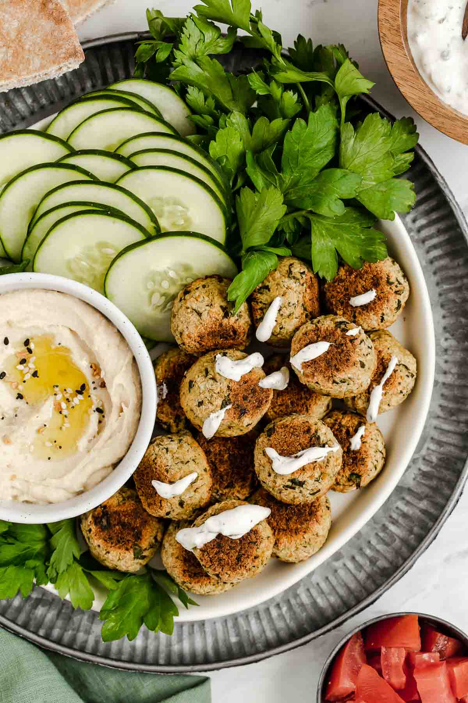

Baked Falafel With White Bean Hummus

Ingredients
Baked falafel
- 1 (15 oz) can garbanzo beans
- 1 shallot, peeled and chunked
- 3 cloves garlic, peeled and halved
- ½ cup packed fresh parsley
- ¼ cup garbanzo bean flour
- 2 tablespoons extra virgin olive oil
- 1 tablespoon lemon juice
- 1 tablespoon Red Chili Lime
- 2 teaspoons ground cumin
- 1 teaspoon ground coriander
- 1 ½ teaspoons kosher salt
- ½ teaspoon baking soda
- Pita, cucumbers, tomatoes, fresh parsley for serving
White bean hummus
- 1 can great northern beans
- 2 cloves garlic
- 1 tablespoon Red Chili Lime
- 3 tablespoons lemon
- 1 tablespoon tahini
- 1 ½ teaspoons kosher salt
- 1 Tablespoon extra virgin olive oil
Instructions
- Preheat oven to 375 degrees Fahrenheit. Line a baking tray with parchment paper.
- Drain and rinse chickpeas, be sure all the liquid is drained.
- Add garbanzo beans, shallot, garlic, parsley, garbanzo bean flour, olive oil, lemon juice, red chili lime sauce, cumin, coriander, salt, and baking soda into a food processor and pulse 15 times, scrape the bowl, pulse 15 times, scrape the bowl, pulse 15 times, scrape the bowl, remove the blade. and mix.
- Form the mixture into small patties, about 1 ½ inches wide and ½ inch tall. Place patties onto the prepped baking tray.
- Bake 11 minutes, flip patties and bake for another 10-12 minutes, until falafel are golden. Serve with white bean hummus (recipe follows), pita, cucumber, tomatoes, and fresh parsley.
- Drain and rinse beans.
- Add beans, garlic, red chili lime sauce, lemon, tahini, salt, and olive oil to a food processor, and blend until smooth.